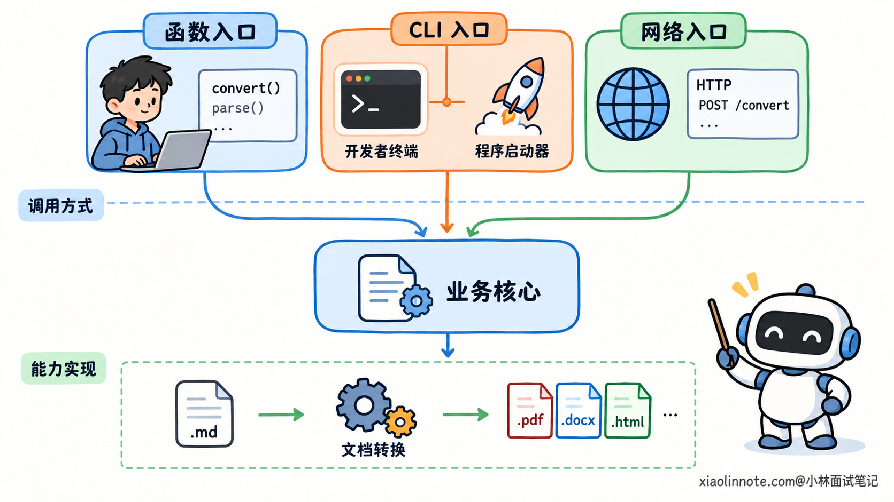
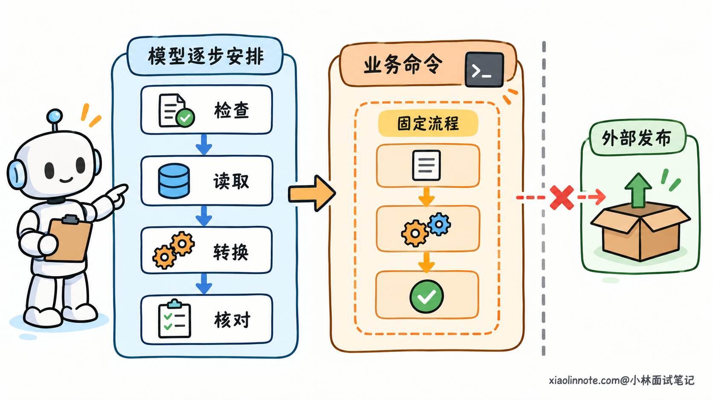
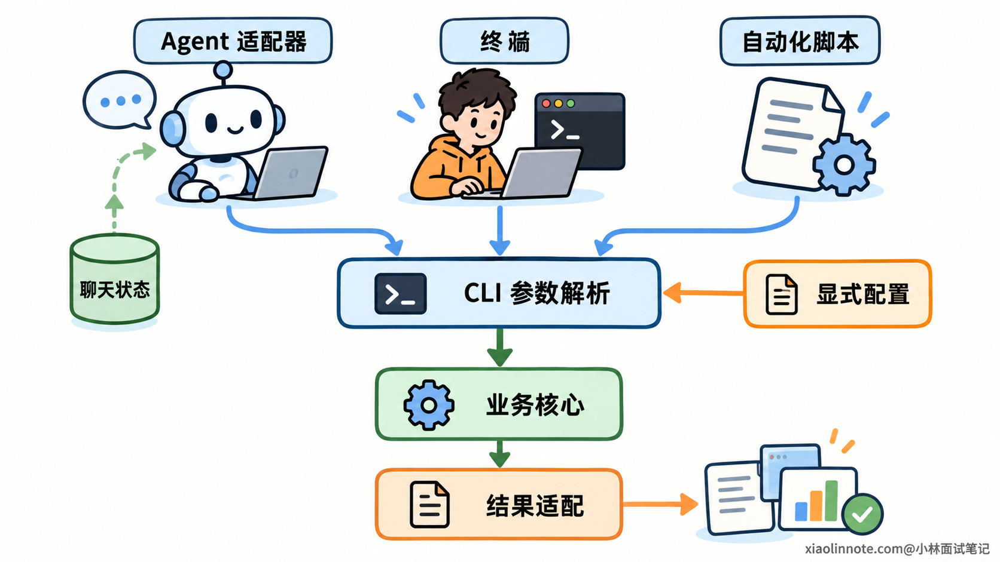
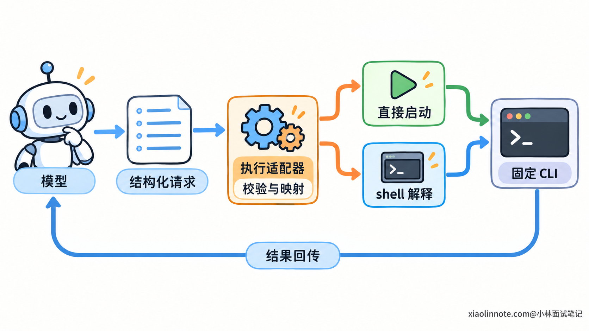
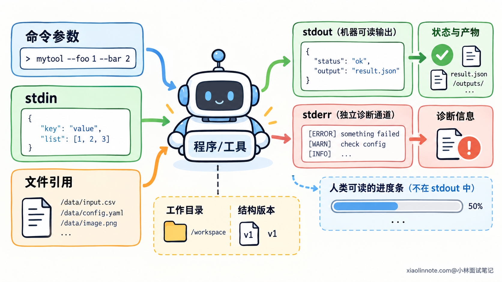
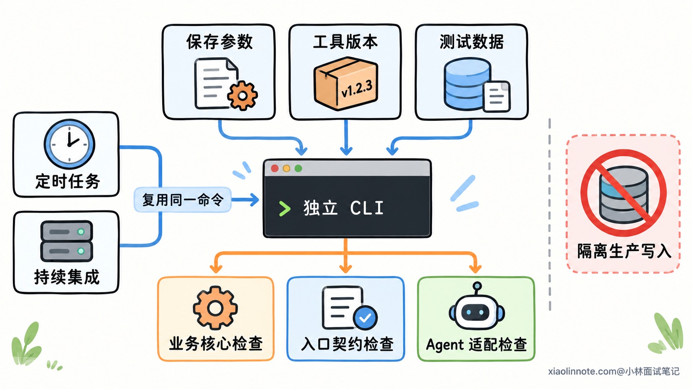

为什么要把 Agent 的工具执行流程封装成 CLI？
👔面试官：为什么要把 Agent 的工具执行流程封装成 CLI，直接调用函数不行吗？
🙋♂️我：命令行比较简单，模型学会一个命令就能执行工具了。
👔面试官：模型返回命令不代表程序已经运行。你把执行入口封装起来，具体解决了哪些工程问题？
🙋♂️我：可以让模型直接看终端输出，看到成功就继续，看到错误就重试。
👔面试官：连接成功、请求受理和任务完成不是一回事。输出里还有进度和日志，调用方怎么判断实际结果？
🙋♂️我：那统一输出 JSON，再放进子进程运行，就能独立复用，也能保证安全。
👔面试官：业务代码还依赖聊天状态，换个命令入口就解耦了吗？子进程继承了宿主权限，又怎么保证隔离？
咱们把工具能力、调用入口和执行环境分开看，就能理解 CLI 封装的价值，以及这些价值怎样真正实现。
💡 简要回答
封装成 CLI，主要是为了让工具流程能够独立运行，并被不同调用方复用。业务逻辑与聊天状态分开以后，同一套能力既能给 Agent 调用，也能给开发者调试、脚本和定时任务使用，不需要每次都启动整个 Agent 应用。
另一个好处是便于调试和自动化。CLI 有明确的参数、结果和退出状态，工具出错时，可以拿对应输入和环境单独运行，检查是工具本身的问题，还是 Agent 选错了工具、传错了参数。机器调用时，还可以把结构化结果与诊断日志分开，避免靠终端里一句「成功」判断业务是否完成。
流程里已经确定的步骤，也可以由工具代码统一组织。模型负责选择工具和填写参数，宿主负责启动 CLI、接收结果，再交回模型，内部步骤就不用每次重新编排。
不过，CLI 会增加进程启动、数据传递和部署成本，也不会自动提供权限隔离。它更适合需要独立运行、多入口复用的工具流程；只在当前程序里使用的小函数，直接调用通常更合适。
📝 详细解析
工具能力和调用入口，是两个不同层次
Agent 使用工具时，至少发生了两件事：模型决定要采取什么动作，模型之外的程序把动作真正执行出来。
工具能力指后面这部分实际工作，比如解析文档、查询数据、转换格式或生成文件。调用入口则规定调用方怎样把请求交给这份能力，以及怎样拿到结果。
同一份能力，可以通过函数接口使用，也可以通过命令行或网络接口使用。更换入口，不必改变内部处理逻辑。
CLI 是 Command-Line Interface，也就是命令行接口。调用方指定要运行的程序与参数，程序取得输入、执行处理，再通过输出和退出状态交回结果。
它是一种程序接口。人可以在终端里输入命令，另一个程序也可以直接启动它，未必需要真的打开一个终端窗口。
例如下面是一条假设的文档转换命令，用来展示接口形态：
# 程序名是 doc-tool，convert 指定操作，参数说明输入与产物位置
doc-tool convert --input notes.md --output notes.pdf
文件怎样解析、格式怎样转换，属于工具内部能力。命令名称、参数含义和结果返回方式，属于 CLI 入口。

所以，封装 CLI 的价值需要从调用方的需求判断。它提供了一条独立执行的通道，但业务复用和可靠运行还需要内部结构配合。
把确定的工具流程交给代码，减少重复编排
「工具执行流程」可能不只包含一个函数，而是多个具有固定顺序的步骤。
例如一种文档转换流程，需要先检查格式，再读取内容，执行转换，最后核对产物是否生成。每次执行这项能力都需要这些步骤，顺序也已经明确。
如果把它们全部暴露成零散操作，让模型每次重新安排，就会增加决策和交互。它可能漏掉检查，或在转换完成前尝试读取输出。
可以把这些已经确定的步骤组织成一个业务操作。调用方给出输入和目标格式，程序按约定完成内部流程，最后交回结果。
模型仍然负责选择什么时候使用这个操作，必要时也可以根据失败结果重新决策。但它不必反复生成那些已经由开发者确定的执行细节。
这里的收益来自流程封装，本身也能通过函数或服务实现。CLI 的额外作用，是让这个封装后的流程能够被独立启动，成为不同调用方都能使用的程序入口。
流程的粒度也要合适。一个命令应该有清楚的业务目的、输入和结果；若内部需要新的用户决定，就不能为了「一步完成」悄悄猜参数或扩大权限。
比如本地生成文件和把文件发布到外部，是两项不同影响。可以分别提供明确入口；确实需要组合时，也要在命令约定中说明传播范围和执行条件，不能藏在一个普通转换操作里。

从 Agent 中拆出工具，才能让同一能力被复用
为什么有些函数加了一层 CLI，还是不能独立使用？因为它依赖的东西没有变。
如果函数从当前对话里读取文件路径，从 Agent 的全局对象里拿配置，还要求初始化模型连接，那么调用方即使只想转换一个文件，也得补齐整个 Agent 环境。
要解开这种依赖，工具需要接收明确输入，返回明确结果。任务里的聊天内容和用户表达，由 Agent 理解并转换；工具只处理它收到的业务参数。
内部可以分成三部分：入口解析参数，业务核心执行处理，结果适配把返回值转换成约定格式。业务核心不要为了执行一项普通处理，就必须知道当前会话编号或模型 SDK 怎样初始化。
必须使用的运行配置仍然可以传入，比如工作目录、服务地址或受控凭据。但要把依赖讲清楚，而不是从不可见的全局状态里碰运气。
结构分清以后，CLI、函数入口和其他接口都可以复用业务核心。开发者在终端调试，自动化脚本定时执行，Agent 适配器启动命令，用的是同一份处理逻辑。
这样减少的，是多份实现之间的差异。若每个调用方各复制一遍转换代码，一处修复了格式问题，其他入口可能仍然保留旧错误。

CLI 也方便跨语言调用。另一种语言不必把业务代码导入自己的进程，只要具备启动程序和处理结果的能力，就能使用这份工具。
不过，跨语言不等于跨平台或免安装。目标机器仍然要有可执行程序、所需运行时和依赖；通过本地 CLI 调用，也不会自动变成远程服务调用。
CLI 接入 Agent，还需要一层执行适配
工具可以独立启动以后，模型怎样用上它？
一种方式是向模型暴露结构化业务工具。工具说明定义名称、用途和参数，模型生成调用请求，宿主程序再把这份请求映射到 CLI。
比如模型提出文档转换请求，参数包含输入文件标识和目标格式。宿主解析标识，确认访问范围，再调用固定的可执行程序。命令返回以后，宿主解析结果，把必要信息送回模型。
这层映射通常可以叫执行适配器。它接上了模型的请求格式与 CLI 的参数格式，业务核心不需要依赖模型接口。
模型输出命令或工具请求时，操作还没有发生。真正启动进程、等待结果和更新任务状态的，是宿主或其他执行程序。
另一种方式是给模型通用命令执行工具，让它直接选择 CLI 命令。这时模型能编排更广的操作，宿主也需要控制更大的执行范围。两种方式都能使用 CLI，但暴露给模型的能力不同。
CLI 与 shell 也要分清。CLI 程序解析自己的参数；shell 则是一种命令解释器，能够处理管道、重定向、变量展开等语法。
固定业务工具不一定需要 shell。宿主可以把可执行文件和参数分别交给进程启动接口，让输入文件名作为一个参数传递，避免把整段用户内容拼成命令语法。
这种做法减少了 shell 解释产生的问题，但不会代替业务参数校验。路径是否允许、参数是否触发额外操作，仍然需要工具和执行层检查。

给机器使用的 CLI，需要明确输入输出契约
独立入口还要解决一个问题：调用方怎样理解它？
人可以阅读帮助文字和终端日志，程序则需要稳定约定。输入参数叫什么、哪些必须提供、类型与范围是什么，输出字段代表什么，都属于接口契约。
简单输入可以用命令参数；结构较复杂时，可以通过 stdin，也就是标准输入，传入 JSON 等数据。大文件适合传路径或受控标识，避免把整个文件塞进参数里。
同样的道理也适用于输出。人喜欢进度条和表格，机器更适合有明确字段的结果。可以提供单独的机器模式，固定编码和结构，关闭交互提示，避免程序在无人输入时一直等待。
通常可以约定 stdout，也就是标准输出，用来返回结构化结果；stderr，也就是标准错误输出，用来记录错误和诊断信息。stderr 中也可能有普通运行日志，不能看到它有内容就认定失败。
例如一个假设的文件工具，可以把业务结果约定为：
{
"schema_version": 1,
"status": "completed",
"artifact_path": "output/notes.pdf",
"warnings": []
}
这里的字段由工具自己定义，不是所有 CLI 都具有的标准。版本字段帮助识别结构，状态说明处理阶段，产物位置方便继续读取，警告说明有无需要注意的情况。
产物路径还要放回约定的工作目录解释。另一个进程或容器未必共享文件系统，必要时要交出调用方能够获取的产物标识，而不是一条只在工具内部存在的路径。

如果日志混进机器结果，JSON 解析可能直接失败。若确实要连续输出多个事件，也需要规定逐条编码、事件类型与完成标记，不能把任意文本流当作一个 JSON 对象读取。
大量结果和日志还要控制大小。宿主可以保存完整文件，只向模型返回摘要与必要引用；读取子进程输出时应处理好各通道，避免一个通道的缓冲区满了，进程却一直等调用方读取。
退出码、业务状态和实际产物，分别说明什么？
CLI 执行结束，调用方通常还会得到退出码。常见约定是 0 表示按程序约定正常结束，非零表示某种失败或其他状态，具体含义需要看工具定义。
这个数字便于脚本控制分支，但表达的信息有限。它不能独自说明处理了哪些数据、有没有警告，也不能代替业务结果和产物检查。
比如正常完成一次搜索，没有找到记录，可以是有效的空结果；也有工具用非零值表示未匹配。调用方需要遵守该工具的契约，而不是把所有非零都解释成「可以重试」。
异步操作还要区分「请求已受理」和「工作已完成」。如果 CLI 只提交了后台任务，返回成功表示提交过程完成，后续需要使用任务标识查询实际处理状态。
工具退出不代表它启动的所有工作都已经停止。本地程序可能启动了其他进程，也可能把任务提交到了远端。取消和超时要针对实际执行单元处理，不能只看入口进程是否结束。
因此，宿主可以先取得进程状态，再解析业务状态，最后按当前操作核对必要证据。文件生成要确认可访问的产物，异步任务要查看完成状态，对外写入要核对实际结果。
超时尤其需要谨慎理解。没有收到响应，不等于操作没有发生。根据操作类型，可以查询状态、沿用稳定操作标识进行去重，或保留结果未知状态等待核查。
CLI 封装提供了报告这些情况的入口，可靠语义仍然要由工具与业务系统共同实现。单纯输出一个 completed 字段，不会让未完成的任务真的完成。
独立入口，让调试和自动化有共同的执行基础
Agent 任务失败，可能是模型选错了工具，也可能是参数转换有误，还可能是工具内部处理失败。把这些环节混在同一次聊天里，不容易单独检查。
工具有了 CLI，就可以跳过模型决策，使用保存的参数直接运行那段流程。开发者先观察工具能否完成，再回头检查 Agent 是否提供了正确请求。
这降低的是复现工具问题所需的条件。原来可能需要整段对话和模型选择过程，现在可以先围绕明确输入、工具版本和必要环境检查。
但它不会自动使执行结果确定。工具读取实时数据时，还要固定数据快照；使用系统时间或外部接口时，也要控制对应输入。测试中的副作用需要隔离，不能为了重现故障再次写入生产系统。
验证也可以分层进行。业务核心检查处理规则，CLI 入口检查参数、输出与退出状态，Agent 适配器检查请求映射和结果回传。每层都能明确自己负责什么。
自动化任务可以复用同一入口。定时执行、批量脚本，以及提交修改后自动运行检查的持续集成，都不需要为工具再维护一份聊天驱动方式。只要提供约定输入和环境，就能发起处理并依据结果决定后续。
版本管理同样容易落到具体对象上。记录 CLI 工具版本、配置和结果结构，调用方能够核对自己使用的实现；升级时保留兼容或明确版本切换，避免参数含义悄悄改变。

选择 CLI，还要考虑运行成本和执行边界
CLI 的优势集中在独立运行、跨进程复用和通用自动化入口，并不是所有函数都值得增加这层封装。
一个只在当前程序里使用的简单计算，直接调用函数更省事。若每次处理只有很少工作，却要启动运行时、加载依赖，再编码和解析结果，入口开销可能超过处理本身。
频繁传递大数据，也可能带来额外复制和编码成本。把对象转换成 JSON 等便于传递的数据形式，通常叫序列化。函数可以直接使用进程内对象，CLI 则需要约定文本、文件或其他跨进程载体，两者成本不同。
需要长期连接或持续服务时，可以让常驻程序承担处理，CLI 只作为控制入口。这样仍然能使用命令行，但运行架构已经不只是每次启动一个短任务。
部署也是成本。调用方要知道工具安装位置、运行时、依赖和版本。CLI 减少了调用方对内部代码的依赖，却不会消除工具自己的环境需求。
最后，独立进程与权限隔离要分清。子进程通常使用被分配或继承的身份、环境与资源权限，它可以拥有和宿主相近的访问能力。加一层 CLI，并不会自动限制文件和网络访问。
限制工作目录、环境变量和执行时限能够改善运行控制；真正的权限与资源边界，还要由受限身份、隔离环境、操作系统规则和业务接口落实。
判断是否封装时，把需要复用的调用方、独立运行需求、调用频率和维护成本放在一起比较。CLI 提供一种实用入口，是否采用取决于这层入口能否解决当前工程问题。
🎯 面试总结
开头只把 CLI 当成命令名称，遗漏了它作为独立调用入口的作用。工具能力先与聊天状态分开，再通过明确输入和结果暴露出来，多个调用方才能复用同一份流程。
模型提出请求，宿主或执行程序启动 CLI，工具完成实际处理。确定步骤可以在工具内部组织，机器结果、诊断日志和退出状态则通过各自约定交回，业务完成仍要核对真实状态与产物。
独立入口让调试和自动化更容易，也带来进程、数据传递和部署成本。它不会自动形成安全隔离，权限仍由执行环境和业务系统控制。需要独立运行与多入口复用的能力，更适合评估 CLI；小而频繁的同进程调用，直接使用函数通常更合适。